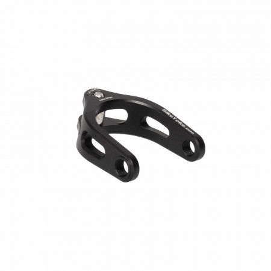
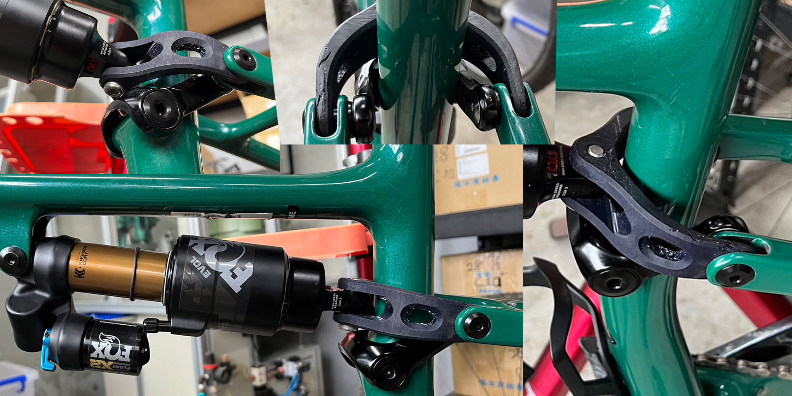

Specialized Epic Brain System
I don't know what the opposite of a love letter is, but this is it
The Specialized Epic is a cross-country race bike that has won championships and races all around the world. It features a revolutionary suspension called the "brain." This mechanical system only activates the suspension when encountering bumps, essentially functioning as an auto-locking rear and front suspension. It has no electrical components, ensuring durability and ruggedness. Sounds great, right?
Oh boy. There are three generations of the brain suspension—aptly named Gen 1, Gen 2, and Gen 3. I have personally owned all three generations and managed to break each one, necessitating rebuilding. Rebuilding a suspension isn't that hard, right? Well, we'll get there.
Ideal Rebuild Interval
Let's begin with the published specs for the Gen 1 and Gen 2 rear suspensions. According to the specifications, the rebuild interval is every 50 MILES. There are races longer than that!
Thankfully, Gen 3 increased that interval to 200 miles. While still a considerable number for a complete rebuild, this is a race bike primarily used by highly skilled riders. Well... not exactly.
If all that wasn't enough, there's the highly proprietary nature of the shock. Rebuilding it in your basement? Think again. At $200 and a few weeks' turnaround time, that bike will be out of commission for quite a while and VERY expensive.
Real World Experience
Just because the manual says it needs to be rebuilt every 50/200 miles, surely it can't be that bad to go over this recommendation, right?
I've experienced multiple failure modes here, fortunately with none being catastrophic.
| Generation | Failure Mode | How many times |
|---|---|---|
| 1 | Lockout not functioning | 1 |
| 2 | Lockout not functioning, constant bottom out | 2 |
| 3 | Fluid hose leaking suspension fluid | 1 |
| 2 | Unknown | 6 |
That unknown value above is someone I know who rides extensively (mainly very smooth dirt trails) and had the rear shock replaced six times while the bike was still under warranty.
Particularly disappointing, I bought a used Specialized Epic with a Gen 3 rear shock, assuming it HAD to be more reliable. On a ride, the rear shock started leaking copious amounts of suspension fluid within an hour. It definitely wasn't doing that when I test rode it. Rather soul-crushing.
How To Fix?
Warning - spicy advice ahead. This is my experience, modify your bike at your own risk
The fix here is to replace the rear shock. Somehow, Specialized still doesn't have a reliable or easy-to-rebuild rear shock for the Specialized Epic.
Gen 1 shock - You can either replace it with a new shock or you can't. There are two models of rear shock, and they had not yet created a proprietary shock, so it's a drop-in replacement if you have the right model. The model that had the Fox shock cannot be replaced like this.
Gen 2 - This magical piece of equipment is the key to all your dreams. 
And can be found here
This is an adapter for the Gen 2 Specialized Epic that allows a normal shock to be used in place of the proprietary one that comes stock with the bike. Does it work? Yes. Does it make your bike heavier? No, not really. Is it expensive? About as much as a single rebuild.
Gen 3 - The people at Bike Yoke promised that they would create a new Yoke for the Gen 3 model and even showcased a version of it. However, it has not come to the market yet, and I eagerly await the sale of the adapter.
Proof that a prototype has been made: 
Originally found here
Specialized's Response
It's been mainly crickets. They don't produce an official adapter, and the rebuilds don't seem to last significantly longer than the original. They've created a few different versions of the shock, so they are at least trying to improve. Given the number of people I personally know who have had issues with this shock, I'm a little surprised I haven't seen more about it. Perhaps it's just that rough Iowa mountain biking (joking, of course).
Specialized has started to remove the brain from their bikes - The Specialized Epic is a great example of this exact thing. With the introduction of their Epic World Cup (Not a Trek SuperCaliber), they may be looking at phasing out the Specialized Epic Brain altogether. This seems like it would be great for everyone. The Epic World Cup might have a proprietary rear shock, but it's at least a new proprietary shock, and maybe, just maybe, we'll be able to rebuild it in our basements.
In the end, it seems they created a high-performance, low-reliability shock and sold it to the public, who are often looking for a medium-performance, high-reliability shock that is easy to rebuild. People can't afford to rebuild their bikes every 50 miles, yet they're stuck with a very, very nice bike that requires exactly that. For some reason, the public keeps buying them (myself included).